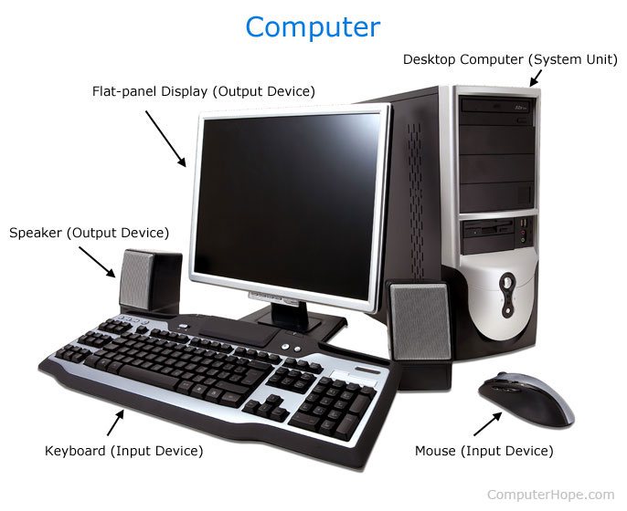

Hardware Concepts
Hardware comprises the physical aspect of a computer, performing tasks set by embedded or system software. These tasks mainly are related to data, getting inputs from users, and outputting various forms of information and media.
Software Concepts:
Software can be defined as instructions or procedures that hardware performs in order to achieve a desire outcome, and can be further classified into two categories, Namely Application software and System software.
Types of motherboards
Computing is a ubiquitous aspect of modern society. Whether used to solve basic arithmetic, or to support the running of entire economies. The hardware and software used to maintain these processes and systems work hand-in-hand to accomplish their tasks. Acting as the foundation for these computers, motherboards allow these technologies to communicate and collaborate.

Types of Computers
A computer is an electronic device that takes an input of data, and follows a set of instructions to achieve a desired result or output. It can take many shapes and forms, sizes and weights. From fitting in your hand, to taking comprising entire complexes, computers vary in many different aspects. Generalizing broadly, computers can be categorized into 6 distinct categories. Namely, they can either be supercomputers, mainframes, minicomputers, workstations, servers, workstations, or microcomputers.
